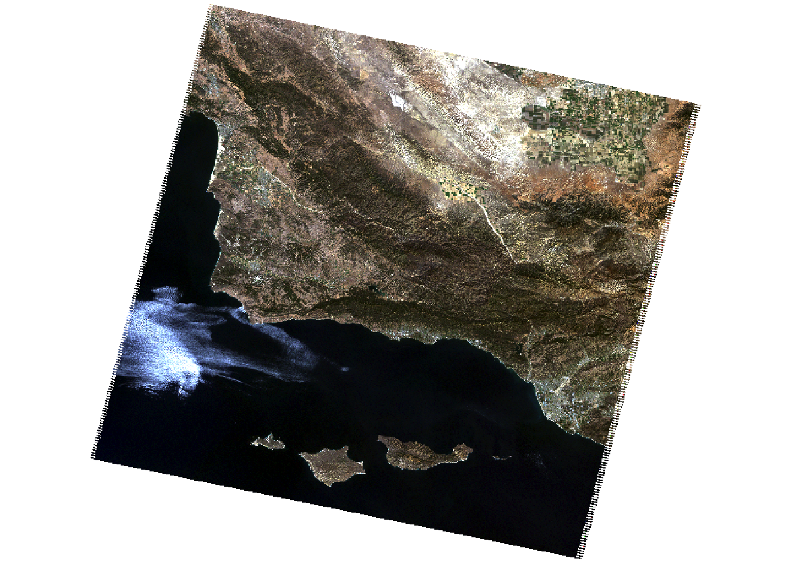
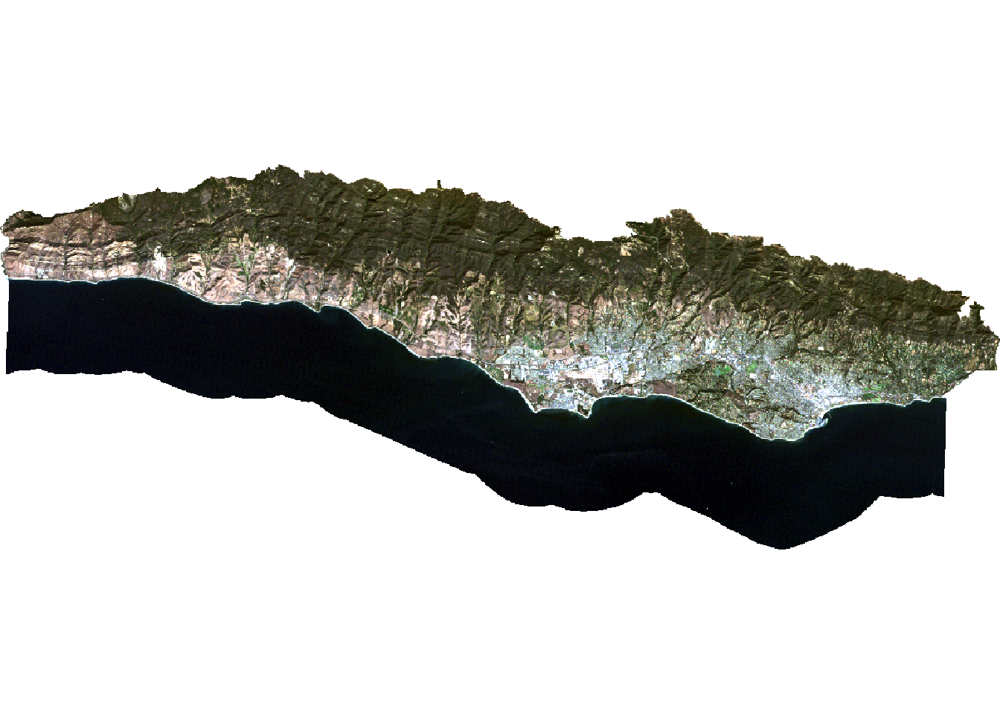
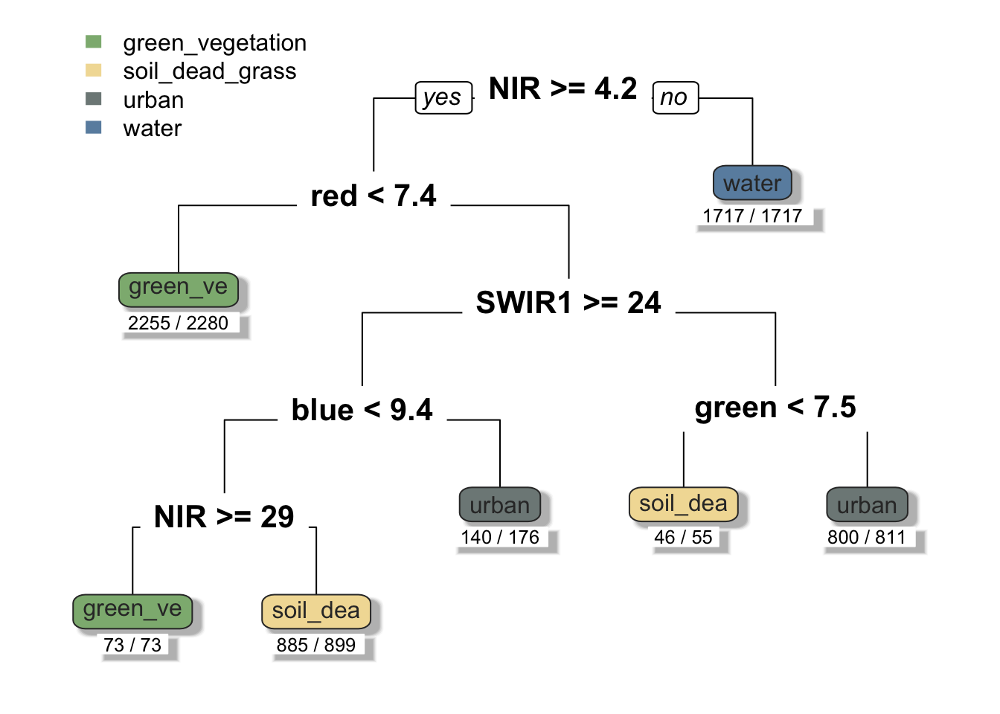
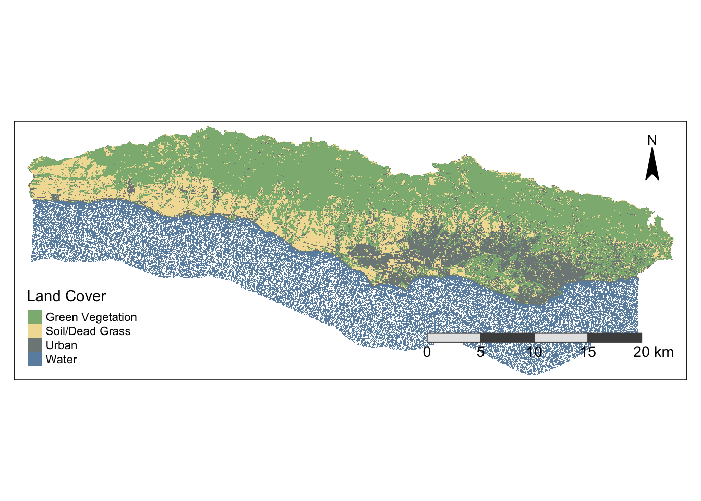

Show code
library(sf)
library(terra)
library(here)
library(dplyr)
library(rpart)
library(rpart.plot)
library(tmap)
rm(list = ls())February 16, 2023
Monitoring the distribution and change in land cover types can help us understand the impacts of phenomena like climate change, natural disasters, deforestation, and urbanization. Determining land cover types over large areas is a major application of remote sensing because we are able to distinguish different materials based on their spectral reflectance.
Classifying remotely sensed imagery into landcover classes enables us to understand the distribution and change in landcover types over large areas. There are many approaches for performing landcover classification – supervised approaches use training data labeled by the user, whereas unsupervised approaches use algorithms to create groups which are identified by the user afterward.
credit: this lab is based on a materials developed by Chris Kibler.
In this lab, we are using a form of supervised classification, a decision tree classifier. Decision trees classify pixels using a series of conditions based on values in spectral bands. These conditions (or decisions) are developed based on training data. In this lab we will create a land cover classification for southern Santa Barbara County based on multi-spectral imagery and data on the location of 4 land cover types:
Landsat 5 Thematic Mapper
Study area and training data
We’ll be working with vector and raster data, so will need both sf and terra. To train our classification algorithm and plot the results, we’ll use the rpart and rpart.plot packages. Set your working directory to the folder that holds the data for this lab.
Note: my filepaths may look different than yours!
Let’s create a raster stack based on the 6 bands we will be working with. Each file name ends with the band number (e.g. B1.tif). Notice that we are missing a file for band 6. Band 6 corresponds to thermal data, which we will not be working with for this lab. To create a raster stack, we will create a list of the files that we would like to work with and read them all in at once using the rast function. We’ll then update the names of the layers to match the spectral bands and plot a true color image to see what we’re working with.
# list files for each band, including the full file path
filelist <- list.files("/Users/javipatron/Documents/MEDS/Courses/eds223/eds223-week9/data/landsat-data", full.names = TRUE)
# read in and store as a raster stack
landsat_20070925 <- rast(filelist)
# update layer names to match band
names(landsat_20070925) <- c("blue", "green", "red", "NIR", "SWIR1", "SWIR2")
# plot true color image
plotRGB(landsat_20070925, r = 3, g = 2, b = 1, stretch = "lin")
We want to contstrain our analysis to the southern portion of the county where we have training data, so we’ll read in a file that defines the area we would like to study.
Reading layer `SB_county_south' from data source
`/Users/javipatron/Documents/MEDS/Courses/eds223/eds223-week9/data/SB_county_south.shp'
using driver `ESRI Shapefile'
Simple feature collection with 1 feature and 18 fields
Geometry type: POLYGON
Dimension: XY
Bounding box: xmin: -120.2327 ymin: 34.33603 xmax: -119.5757 ymax: 34.53716
Geodetic CRS: NAD83Now, we can crop and mask the Landsat data to our study area. This reduces the amount of data we’ll be working with and therefore saves computational time. We can also remove any objects we’re no longer working with to save space.
# crop Landsat scene to the extent of the SB county shapefile
landsat_cropped <- crop(landsat_20070925, SB_county_south)
# mask the raster to southern portion of SB county
landsat_masked <- mask(landsat_cropped, SB_county_south)
# remove unnecessary object from environment
rm(landsat_20070925, SB_county_south, landsat_cropped)Now we need to convert the values in our raster stack to correspond to reflectance values. To do so, we need to remove erroneous values and apply any scaling factors to convert to reflectance.
In this case, we are working with Landsat Collection 2. The valid range of pixel values for this collection 7,273-43,636, with a multiplicative scale factor of 0.0000275 and an additive scale factor of -0.2. So we reclassify any erroneous values as NA and update the values for each pixel based on the scaling factors. Now the pixel values should range from 0-100%.
# reclassify erroneous values as NA
rcl <- matrix(c(-Inf, 7273, NA,
43636, Inf, NA), ncol = 3, byrow = TRUE)
landsat <- classify(landsat_masked, rcl = rcl)
# adjust values based on scaling factor
landsat <- (landsat * 0.0000275 - 0.2) * 100
# plot true color image to check results
plotRGB(landsat, r = 3, g = 2, b = 1, stretch = "lin")
Warning: [summary] used a sample blue green red NIR
Min. : 1.11 Min. : 0.74 Min. : 0.00 Min. : 0.23
1st Qu.: 2.49 1st Qu.: 2.17 1st Qu.: 1.08 1st Qu.: 0.75
Median : 3.06 Median : 4.59 Median : 4.45 Median :14.39
Mean : 3.83 Mean : 5.02 Mean : 4.92 Mean :11.52
3rd Qu.: 4.63 3rd Qu.: 6.76 3rd Qu.: 7.40 3rd Qu.:19.34
Max. :39.42 Max. :53.32 Max. :56.68 Max. :57.08
NA's :39856 NA's :39855 NA's :39855 NA's :39856
SWIR1 SWIR2
Min. : 0.10 Min. : 0.20
1st Qu.: 0.41 1st Qu.: 0.60
Median :13.43 Median : 8.15
Mean :11.88 Mean : 8.52
3rd Qu.:18.70 3rd Qu.:13.07
Max. :49.13 Max. :48.07
NA's :42892 NA's :46809 We will load the shapefile identifying different locations within our study area as containing one of our 4 land cover types. We can then extract the spectral values at each site to create a data frame that relates land cover types to their spectral reflectance.
Reading layer `trainingdata' from data source
`/Users/javipatron/Documents/MEDS/Courses/eds223/eds223-week9/data/trainingdata.shp'
using driver `ESRI Shapefile'
Simple feature collection with 40 features and 2 fields
Geometry type: POLYGON
Dimension: XY
Bounding box: xmin: 215539.2 ymin: 3808948 xmax: 259927.3 ymax: 3823134
Projected CRS: WGS 84 / UTM zone 11N# extract reflectance values at training sites
training_data_values <- extract(landsat, training_data, df = TRUE)
# convert training data to data frame
training_data_attributes <- training_data %>%
st_drop_geometry()
# join training data attributes and extracted reflectance values
SB_training_data <- left_join(training_data_values, training_data_attributes,
by = c("ID" = "id")) %>%
mutate(type = as.factor(type)) # convert landcover type to factorTo train our decision tree, we first need to establish our model formula (i.e. what our response and predictor variables are). The rpart function implements the CART algorithm. The rpart function needs to know the model formula and training data you would like to use. Because we are performing a classification, we set method = "class". We also set na.action = na.omit to remove any pixels with NAs from the analysis.
To understand how our decision tree will classify pixels, we can plot the results. The decision tree is comprised of a hierarchy of binary decisions. Each decision rule has 2 outcomes based on a conditional statement pertaining to values in each spectral band.
# establish model formula
SB_formula <- type ~ red + green + blue + NIR + SWIR1 + SWIR2
# train decision tree
SB_decision_tree <- rpart(formula = SB_formula,
data = SB_training_data,
method = "class",
na.action = na.omit)
# Plot decision tree with colored last nodes
prp(SB_decision_tree, extra = 2, under = TRUE, tweak = 1, branch = 1, shadow.col = "gray", round = 1, cex = 1, split.cex = 1.3, col = "gray20", box.palette = list("#8DB580", "#F2DDA4", "#7E8987", "#6A8EAE"))
Now that we have created our decision tree, we can apply it to our entire image. The terra package includes a predict() function that allows us to apply a model to our data. In order for this to work properly, the names of the layers need to match the column names of the predictors we used to train our decision tree. The predict() function will return a raster layer with integer values. These integer values correspond to the factor levels in the training data. To figure out what category each integer corresponds to, we can inspect the levels of our training data.
Now we can plot the results and check out our land cover map!
library(tmap)
# Plot results with improved aesthetics
tm_shape(SB_classification) +
tm_raster(style = "cat",
palette = c("#8DB580", "#F2DDA4", "#7E8987", "#6A8EAE"),
labels = c("Green Vegetation",
"Soil/Dead Grass",
"Urban",
"Water"),
title = "Land Cover") +
tm_layout(legend.position = c("left", "bottom")) +
tm_compass(type = "arrow",
size = 2,
position = c("right", "top"),
color.light = "black",
color.dark = "black") +
tm_scale_bar(color.light = "gray90",
color.dark = "gray30",
size = 0.9,
position = c("right", "bottom"))Warning: The argument size of tm_scale_bar is deprecated. It has been renamed
to text.sizestars object downsampled to 1611 by 620 cells. See tm_shape manual (argument raster.downsample)
@online{patrón2023,
author = {Patrón, Javier},
title = {Land {Cover} {Analysis}},
date = {2023-02-16},
url = {https://github.com/javipatron},
langid = {en}
}